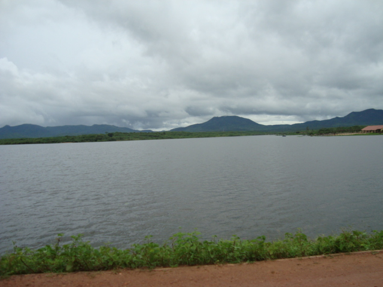

Geoinfos
Informações técnicas sobre relevo, população, IDH etc.
| INFORMAÇÕES | |
|---|---|
| Municípios limítrofes | Norte: Senador Sá, Martinópole e Granja; Sul: Moraújo e Senador Sá; Leste: Senador Sá; Oeste: Granja e Moraújo. |
| Fundação | 26 de março de 1957 (64 anos) |
| Área total | 697,683 km² |
| Clima | Tropical quente semiárido Brando |
| IDH | 0,566 |
| PIB | R$ 12.289,43 |
| INFORMAÇÕES TERRITORIAIS | |
|---|---|
| Número de habitantes | 13 840 habitantes |
| Superfície de Uruoca |
69 675 hectares
696,75 km² |
| Densidade populacional | 19,9 ha./km² |
| Altitude de Uruoca | 62 metros de altitude |
| Coordenadas geográficas decimais |
Latitude:
-3.31677
Longitude: -40.5562 |
| Coordenadas geográficas sexagesimais | Latitude: 3° 19' 0'' Sul , Longitude: 40° 33' 22'' Oeste |
| INFORMAÇÕES DO MUNICÍPIO | |
|---|---|
| Endereço da Prefeitura Municipal de Uruoca |
Uruoca
Prefeitura de Uruoca
Rua João Rodrigues, 173 - Centro Uruoca - CE, 62.460-000 Brasil |
| Telefone da prefeitura |
(88) 99255-9694
(88) 3648-1078
Internacional: +55 88 3648-1078 |
| Fax |
(88) 3648-1133
Internacional: +55 88 3648-1133 |
| Endereço electrónicoda prefeitura |
secomuruoca@gmail.com
|
| Site oficial do município | uruoca.ce.gov.br |
| INFORMAÇÕES DO ADMINISTRATIVAS | ||
|---|---|---|
| Prefeito de Uruoca | Francisco Kilsem Pessoa Aquino | |
| Partido politico | PDT | |
| INFORMAÇÕES DE TRANSPORTE | |
|---|---|
| Transporte urbano disponível | - |
| Aeroporto |
Aeroporto de Sobral
47.3 km
Aeroporto Pinto Martins
55.5 km
Aeroporto Internacional Prefeito Dr.João Silva Filho
138.9 km
|
| INFORMAÇÕES DE DISTÂNCIA A OUTRAS CIDADES | ||
|---|---|---|
| São Paulo : 2345 km | Rio de Janeiro : 2199 km | Brasília : 1605 km |
| Salvador : 1098 km | Curitiba : 2632 km | Belo Horizonte : 1873 km |
| Manaus : 2164 km | Fortaleza : 228 km mais perto | Recife : 820 km |
| Goiânia : 1766 km | Belém : 908 km | Porto Alegre : 3179 km |
| Guarulhos : 2325 km | Campinas : 2291 km | São Luís : 426 km |
| Distância calculada em linha reta! | ||
Fonte: Wikipedia e Cidade Brasil
História
Conheça mais sobre a história de Uruoca.
Distrito do município de Granja, quando a lei nº 3.560, de 26 de março de 1957, deu-lhe a categoria municipal.
Começa por volta do ano de 1882 com a ereção da capela dedicada à Nossa Senhora do Livramento, construção essa feita através da doação de um terreno de Cândido José de Almada Bravo, um dos precursores do então distrito. Seu crescimento de forma rápida foi se dando após a construção da Estação Ferroviária que ligava Camocim a Sobral em 1892, ferrovia essa desativada em 1977, estando ainda erguida a antiga estação à margem da CE-362, que foi transformada em um centro artesanal.
Enquanto o PSD lançava o nome de Antônio Saturnino do Prado, que já cumpria o quarto mandato de vereador.
Era antigamente conhecida como Riachão, porque um riacho cortava a pequena vila. Pertencia ao município de Granja, como distrito. Foram dados nomes como Valdelândia ou Rochalândia, buscando homenagear as famílias ilustres da época, mas no dia 30 de dezembro de 1943, através do Decreto Lei nº 1.114, lhe foi concedido o nome definitivo de URUOCA. A lei nº 3.560, de 26 de março de 1957, deu-lhe a categoria municipal.
Foi elevado a categoria de município a 26 de março de 1957, segundo a Lei nº 3.560, sendo instalado no dia 14 de abril do mesmo ano
Pontos Turísticos
Saiba mais sobre os melhores lugares e o que fazer em Uruoca.
É um açude brasileiro no estado do Ceará. Está construído sobre o leito do riacho São Francisco, na bacia do Coreaú e é uma barragem tipo terra homogênea. Foi concluído em 1981. Sua capacidade é de 5.203.000 m³.
 Paróquia Nossa Sra. do LivramentoCentro, Uruoca - CE, 62460-000

Como Chegar?
Veja como chegar nos melhores pontos de Uruoca